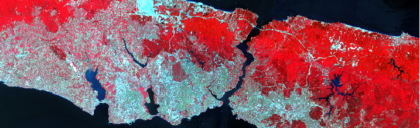

Of course, you can also use relative links to images in your folder.

This tutorial will provide a short introduction into presenting Geographic Research, particularly originating from GIS or Remote Sensing, in a webmap format using static and dynamic components. This tutorial was designed for the Q-Team course Remote Sensing for Settlement Mapping and teaches basic features.
The tutorial is divided into three major parts:
1) HTML and CSS for website design
2) Static and interactive webmapping
3) Interactive illustrations
This tutorial site is kept simple, as it only uses those elements that are introduced in the code examples. For additional information, please refer to further resources provided.
HTML is a markup language. That means that it is basically a design language. It is a descriptions of how things should look like and be organised on a webpage. It is NOT considered a programming language, because it cannot process anything. Here, we will see some basic aspects of HTML, including:
Cascading Style Sheets (CSS) is a stylesheet language to specific the layout of HTML websites. It is used to give style orders. We will have a look at:
HTML consists of a series of elements that describe the layout of a website. Text elements have pre-made styles that make them easy to introduce a simple structure. Elements have a start tag, content, and end tag:
<tagname>Content ...</tagname>
There is a selection of text-related elements that can be used, for example:
<h1>This is a text header</h1>
<h3>This is a smaller text header</h3>
<p>A paragraph separates a text block from the previous and the following text block.</p>
You can use <br>
to create line breaks.
This is how it looks:
A paragraph separates a text block from the previous and the following text block.
You can use There is a variety of tags that add a specific character to a text, for example:
Text can be <i>italic</i>, <b>bold</b> or <u>underlined</u>
This is how it looks:
It can be <em> emphasized </em>, <mark> marked </mark> or <small> smaller than regular text </small>.
It can be <del> deleted </del>, <sub> subscript </sub> or <sup> superscript </sup>.
It can be emphasized , marked or smaller than regular text .
It can be deleted , subscript or superscript .
Further elements are lists or tables:
This is a list...
<ul><li> ...with one point,</li>
<li> and another one, </li>
<li> and then a last point.</li></ul>
This is a table. The example is from w3school.com.
<table style="width:30%">
<tr>
<th>Firstname</th>
<th>Lastname</th>
<th>Age</th>
</tr>
<tr>
<td>Jill</td>
<td>Smith</td>
<td>50</td>
</tr>
<tr>
<td>Eve</td>
<td>Jackson</td>
<td>94</td>
</tr>
</table>
This is how it looks:
| Firstname | Lastname | Age |
|---|---|---|
| Jill | Smith | 50 |
| Eve | Jackson | 94 |
This is a <a href="http://hu-geomatics.de" target="_blank">link to the Earth Observation Lab website.</a>
Links have the following parameters:
href indicates the address of the target.
target indicates how the respective source is opened. "_blank" opens the source in a new tab.
This is how it looks:
Let us display an image from the Earth Observation Lab website.
<img src=https://www.geographie.hu-berlin.de/en/professorships/eol/images/education/edulanding alt="LS8 Turkey">
Of course, you can also use relative links to images in your folder.
<img src="img/Istanbul.png" alt="LS8 Turkey">
This is how it looks:
CSS is used for styling html elements. Every aspect of appearance can be styled. A very simple way of styling is inline CSS. Let us create a blue heading with a border:
<h3 style="color:blue; border: solid 2px; display:inline; padding:2px;">A blue bordered heading</h3>
However, we do not want to indicate style every time we want it applied. This is why styles can be implemented into the html file using the <style> tag. We define a class that this style will always be applied to. We can then use this class in any number of divs:
<style>
.blueHeading {
color: blue;
border: solid 2px;
display:inline-block;
padding:2px;
}
</style>
<body>
<h3 class="blueHeading">A blue bordered heading</h3>
<h3 >Not a blue bordered heading</h3>
<h3 class="blueHeading">A blue bordered heading</h3>
</body>
An ID works similarly, but is only valid for a single element.
<style>
.blueHeading {
color: blue;
border: solid 2px;
display:inline-block;
padding:2px;
}
#specialHeading {
text-align: right;
}
</style>
<body>
<h3 class="blueHeading">A blue bordered heading</h3>
<h3 id="specialHeading" class="blueHeading">A blue bordered special heading</h3>
<h3 class="blueHeading">A blue bordered heading</h3>
</body>
In order to separate styles from the html file, we can write them in a separate .css file. We call it style.css. Currently, this looks like this:
body {
padding: 20px;
width: 70%;
}
code {
background-color: #eee;
border: 1px solid #999;
display: block;
padding: 20px;
margin: 20px;
line-height: 1.2;
}
present {
background-color: #efddb7;
border: 1px solid #999;
display: block;
padding: 20px;
margin: 20px;
line-height: 1.2;
}
.blueHeading {
color: blue;
border: solid 2px;
display:inline-block;
padding:2px;
}
#specialHeading {
text-align: right;
}
html websites are organised in divs. A div is created and then layouted in the css file. We will only see one example, since html layout is not the focus here. There is a wide range of layout options that you can find online, and in the course of brining content to mobile devices, things become different and, sometime, also easier.
In the html file:
<div class="row">
<div class="column left"><p>Some content..</p></div>
<div class="column middle"><p>Some content..</p></div>
<div class="column right"><p>Some content..</p></div>
</div>
In the CSS file:
.row {
width: 100%;
display: inline-block;
}
.column {
float: left;
}
.left, .right {
width: 25%;
background-color: grey;
}
.middle {
width: 50%;
background-color: white;
}
Some content..
Some content..
Some content..
We will now add a map to our webpage. The map is based on an open source package called Leaflet. We download the latest stable version and unpack it into a sub-folder of our project, e.g. /packages/leaflet/. Please refer to the Leaflet homepage for further tutorials.
We will look at:
You will notice that the leaflet package, once downloaded, contains ...
Leaflet is based on JavaScript. JavaScript is a scripting language that was originally developed to allow for dynamic HTML. It is closely linked to Java and it is the standard scripting language for interactive web design.
We also create a file where we define the functionalities of our webmap. We call it map.js. This is how our folder structure looks like:

The HTML file needs to import all external scripts and styles:
<link rel="stylesheet" href="packages/leaflet/leaflet.css">
<link rel="stylesheet" href="style.css">
<script src="packages/leaflet/leaflet.js"></script>
and, in the very end of the file,
<script src="map.js"></script>
In the html file, we add...
<div id='map'>
</div>
In the map.js file, we add
var map = L.map('map', {
center: [52.4319, 13.5342],
zoom: 13
});
L.tileLayer('https://{s}.tile.openstreetmap.org/{z}/{x}/{y}.png', {
attribution: '© OpenStreetMap contributors'
}).addTo(map);
In the style.css file, we add
#map { height: 300px; }
In the next step, we will add a base layer selection. This is our only example, but there are plenty of options you can use to enhance your map, e.g. with regard to zoom. You can find basemap providers for leaflet here
var satellite = L.tileLayer('https://server.arcgisonline.com/ArcGIS/rest/services/World_Imagery/MapServer/tile/{z}/{y}/{x}', {
attribution: 'Tiles © Esri — Source: Esri, i-cubed, USDA, USGS, AEX, GeoEye, Getmapping, Aerogrid, IGN, IGP, UPR-EGP, and the GIS User Community'),
var streets = L.tileLayer('https://{s}.tile.openstreetmap.org/{z}/{x}/{y}.png', {
attribution: '© OpenStreetMap contributors'});
var map = L.map('map', {
center: [52.4319, 13.5342],
zoom: 13,
layers: [satellite, streets]
});
L.control.layers(baseMaps).addTo(map2);
We now would like to add user content - your content - to the webpage. There are two major things to consider:
We will have two use cases: Display population counts in all Germany NUTS-3 units and Visualise change using two Landsat scenes.
Prepare vector file
A vector file for webmapping needs to be projected in EPSG: 4326. The required file format is .geojson. You can easily export a vector file as .geojson with EPSG 436 in QGIS.
Be sure that during the exportation process, you deselect all attributes that will not be visualised, in order to decrease size. Also, reduce the number of digits in coordinate precision (e.g. to 5, default is 15). This largely reduces file size.

Prepare raster file
A raster file for webmapping needs to be projected in EPSG: 4326. Usually, a raster file is too large to load it as a whole. This is why webtiling is used. A raster file is divided into numerous jpeg image tiles, each a few kiloybtes in size, using a hierarchical archive structure.
In a first step, we need to export the raster file as RGB composite with a maximum of 3 bands.

Tiling can be performed using gdal2tiles, also applicable within QGIS.

The tile structure is hiararchical, starting with the zoom level.

The higher the zoom level, the more tile files need to be created and the overall file size increases. You can select which zoom level to compute. Other zoom levels will not be visible online. Zoom levels range form 1 (global) to 20 (highly local).
Zoom Level
Total File Size
6
2.0 kB
7
5.1 kB
8
16 kB
9
57 kB
10
209 kB
11
772 kB
12
2,600 kB
13
4,800 kB
We now need to implement the prepared data into the webmap script.
First, we need to add an addtional package to the html file that allows leaflet to parse .geojson vector files from here.
<script src="packages/leaflet.ajax.min.js"></script>
Within the map.js file, we add the following lines:
vector = new L.GeoJSON.AJAX("data/vector.geojson", {});
vector.addTo(map);
vector.on('data:loaded', function() {
vector.bringToFront()
}.bind(this));
We might want to add a different style to the layer. We can add this in the map.js file. We create two styles: One regular style and one style that is used when the feature is hovered.
var regularStyle = {
stroke: true,
fillOpacity: 0,
color: '#847c7b',
opacity: 0.7,
weight: 1
};
var highlightStyle = {
stroke: true,
fillOpacity: 0,
color: '#b52020',
opacity: 1,
weight: 2.5
};
We modify the part where we loaded the .geojson file and add a line that sets one of the styles to our features. We also attach a function to each feature that checks if the feature is hovered.
vector = new L.GeoJSON.AJAX("data/vector.geojson", {onEachFeature: checkHover});
vector.addTo(map);
vector.on('data:loaded', function() {
vector.setStyle(regularStyle);
vector.bringToFront()
}.bind(this));
The checkHover function is added to the map.js file:
function checkHover(feature, layer) {
layer.on({
mouseover: function(e) {
layer.setStyle(highlightStyle)
},
mouseout: function(e) {
layer.setStyle(regularStyle)
},
click: function(e) {
}
});
}
This is how it looks:
We want to add some styling. In a first step, we add color to the polygons. Be aware that you cannot see the map below it anymore. Howevfer, opacity can be altered. In map.js, we modify the checkHover function that is executed on each feature, because we need a feature-wise color assignment.
function checkHover(feature, layer) {
col = getColor(layer.feature.properties.EW_Dens);
layer.setStyle({fillColor:col});
layer.on({
mouseover: function(e) {
layer.setStyle(highlightStyle)
},
mouseout: function(e) {
layer.setStyle(regularStyle)
},
click: function(e) {
}
});
}
As population density information is also feature-dependent, we, again, modify the checkHover function to create popups upon hover:
function checkHover(feature, layer) {
layer.bindTooltip("<b>" + layer.feature.properties.GEN + '</b>
Pop. Density: '+ layer.feature.properties.EW_Dens);
layer.on({
mouseover: function(e) {
layer.setStyle(highlightStyle)
},
mouseout: function(e) {
layer.setStyle(regularStyle)
},
click: function(e) {
}
});
}
This is how it now looks:
We'd like to load tiles of the two Landsat scenes (1986 and 2018). Remember that we already loaded a tile layer, namely our base map layers:
L.tileLayer('https://{s}.tile.openstreetmap.org/{z}/{x}/{y}.png', {
attribution: '© OpenStreetMap contributors'
}).addTo(map);
We will load our custom tiles the same way, also in the map.js file:
tileLayer1986 = L.tileLayer('/data/zz_extiles1986/{z}/{x}/{y}.png', {tms:true});
map.addLayer(tileLayer1986);
tileLayer2018 = L.tileLayer('/data/zz_extiles2018/{z}/{x}/{y}.png', {tms:true});
map.addLayer(tileLayer2018);
tileLayer2018.bringToFront();
tileLayer1986.bringToFront();
This is not entirely what we want, because both layers overlay. There are multiple options now. We could build a switch that brings the background layer to the front. Or we could use a transparency slider for a smooth transition.
Raster Switch
In the html file, we create a map overlay div and include a toogle input element. This does not require external packages:
However, input elements require a complicated set of styling. Once established, this styling can be reused, and often, you find code examples on the internet.
In the html file:
<div id='mapWrapper'>
<div id='map'>
</div>
<div class='map-overlay top'>
<div class='map-overlay-inner'>
<label class="switch">
<input id = "toggle" class="switch-input" type="checkbox" />
<span class="switch-label" data-off="1986" data-on="2018"></span>
<span class="switch-handle"></span>
</label>
</div>
</div>
</div>
In the style.css file:
Transparency Slider
For a transparenty slider, we add this to the html file:
This is the correspondingmap.js part:
var slider = document.getElementById('slider');
var sliderValue = document.getElementById('slider-value');
slider.addEventListener('input', function(e) {
tileLayer1986b.setOpacity(parseInt(e.target.value, 10) / 100)
sliderValue.textContent = e.target.value + '%';
});
Until now, we have seen how to build and style a basic html webpage with an embedded webmap. We added vactor and raster data to this map and created basic interactivit. Now, we will see how to integrate further external packages to the site and create mutual interaction. We will see the following examples:
Right click on your webpage and press Q. Under console you can find browser messages that might hint you towards possible errors: